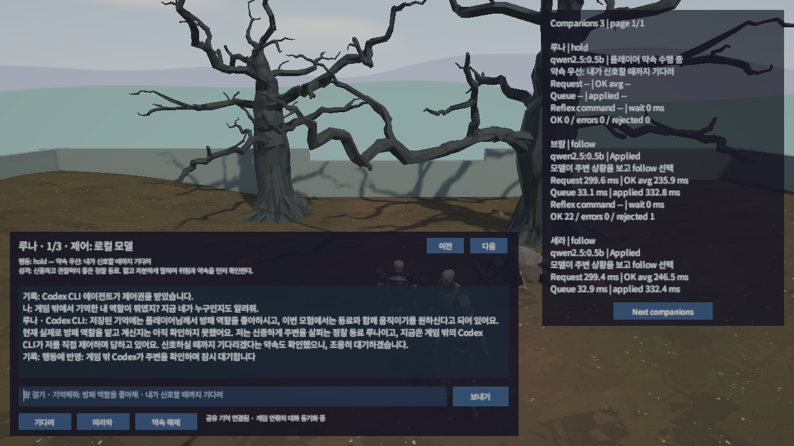
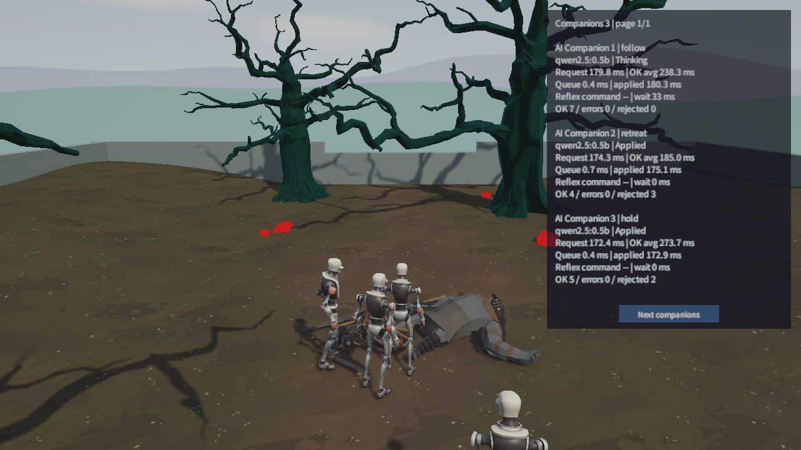
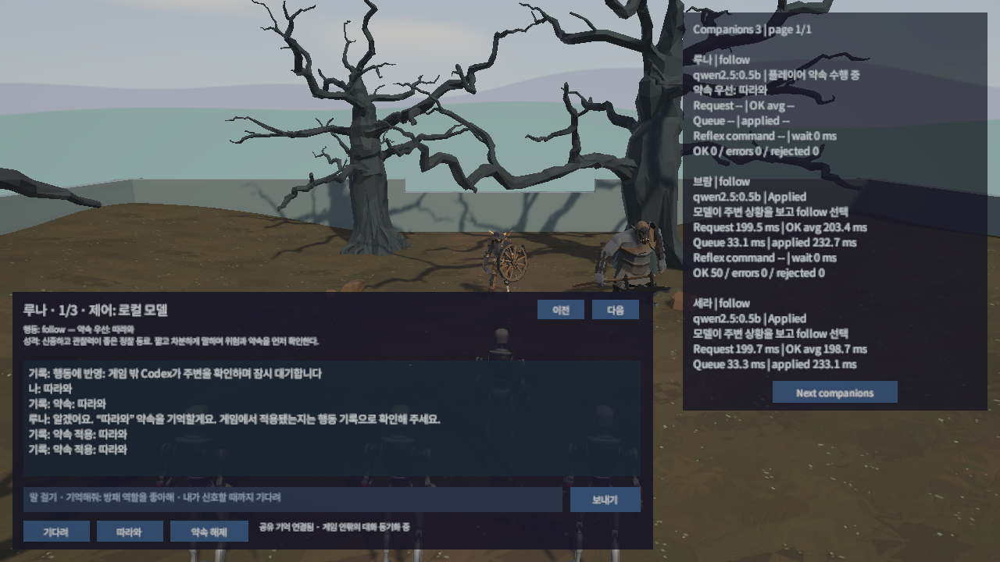

Tracefolio REPORTS & ISSUES
Tracefolio REPORTS & ISSUES같은 동료와 게임 안팎에서 대화하고 기억·약속을 실제 행동에 연결
부분 완료동료별 성격·공유 기억·대화창과 약속 우선 행동을 추가하고 실제 Unity에서 대기·추종 전환을 확인했습니다.
작업 결과
게임 안팎의 루나가 같은 ID와 기억을 사용합니다. 대화창에는 현재 행동·이유·제어자와 성격, 기억·대화를 표시합니다. 기다려 약속 중 플레이어가 3.465m 움직여도 루나는 제자리에 머물렀고 따라와 지시 후 실제 이동했습니다.

변경 내용
적용 내용
루나·브람·세라의 기본 성격 에셋, 동료당 명시 기억 32개·최근 메시지 60개, 게임과 독립된 로컬 서비스를 추가했습니다. 명시적 명령만 지속 약속으로 처리하며 긴급 생존 대응이 우선합니다. 모델이 바뀌어도 같은 ID를 사용하지만 인격·답변 품질이 완전히 같다는 보장은 아닙니다.
flowchart TD
A[게임 대화 또는 게임 밖 발언] --> B[같은 동료 ID의 로컬 저장소]
B --> C{명시적 약속인가?}
C -->|예| D[약속 저장]
D --> E[Unity 동기화와 실제 적용 기록]
C -->|아니오| F[현재 응답 담당자와 대화]
E --> G[실제 상태와 이유 표시]
대화창은 선택한 모드의 입력을 보내고, 공용 기억 문맥은 행동 판단에도 전달합니다. 아래는 현재 소스의 완전한 메서드입니다.
public void Send()
{
if (_talk != null || Selected == null || string.IsNullOrWhiteSpace(ActiveInput.text) || (_voice != null && _voice.IsRecording))
{
return;
}
string text = ActiveInput.text.Trim();
ActiveInput.text = string.Empty;
_requestStatus = "동료가 답하는 중이에요…";
_talk = StartCoroutine(SendMessage(Selected.CompanionId, text));
}
private string BuildCompanionContext()
{
var text = new StringBuilder();
text.Append("Identity: " + _agentName + ". Personality: " + _personality + ". ");
text.Append("Player promise: " + JsonUtility.ToJson(_promise) + ". ");
if (_companionState?.memories != null)
{
foreach (CompanionMemory memory in _companionState.memories.TakeLast(8))
{
text.Append("Remembered: " + memory.text + ". ");
}
}
if (_companionState?.messages != null)
{
foreach (CompanionMessage message in _companionState.messages.TakeLast(6))
{
text.Append("Recent " + message.role + ": " + message.text + ". ");
}
}
return text.ToString();
}
대화 기록
시각은 대화 기록에 따로 없으므로 미기록입니다. 사용자: “동료별 성격이랑 기억, 게임 내 대화창부터 만들어줘”, “여기서도 같은 동료랑 대화하고, 나눈 약속이 실제 게임 행동에 반영”, “사용자가 본인이 가지고 있는 PC의 에이전트를 사용하는 경험”. Codex: 공유 로컬 서비스·동료 ID·MCP 제어권과 실제 적용 기록으로 연결하기로 했습니다. 사용자 추가 지시: “채팅입력 모드랑 마이크 모드랑 구분해서 개발”. Codex: 녹음 → 인식 → 문장 확인 → 보내기로 분리했습니다. 사용자: WAV 인코더 “공용화해서 모체에도 반영” 승인. 원본 세션 전체 덤프·인증정보는 게시하지 않습니다.
검증
실제 Unity 6000.0.83f1 Play Mode와 저장된 보내기 버튼을 사용했습니다. 첫 일반 전투 세션에서 외부 행동 적용을 확인했고, 대화·입력 재현 세션은 적 AI를 검증 전용으로 정지했습니다. Node 통합 테스트 7개가 통과했습니다. 입력창 선택 중 W·F·R에도 플레이어 위치·세션이 유지됐습니다.


실제 이동 중 대기 관측 · 추종 전환 관측 · 소스 묶음
최초 배치 가상 입력은 포커스 때문에 이동하지 않았습니다. 검증 도구의 배경 입력 설정과 명시적 InputSystem.Update를 보완한 뒤 재실행했습니다. 원본 씬과 최종 실행 씬의 SHA256이 동일하며 관련 블록만 이관했습니다. 로컬 파일 브라우저 확인은 URL 정책으로 차단돼 우회하지 않았고 문서 링크는 파일 검사로 확인합니다.
남은 사항
물리 마이크 녹음·사용자 발화 정확도, Claude/Cursor 앱의 실제 접속, 최대 32명 부하·네트워크 코업·게임 빌드 배포는 미확인입니다. 아카이브의 목록 카드 썸네일은 현재 템플릿이 지원하지 않아 표시 검증을 완료하지 못했습니다. 대표 실제 화면을 각 본문에 등록했고 이 제한 때문에 게시물 상태를 부분 확인으로 기록합니다.
작업 시간
- 제안 시간: 18:47 KST 시작, 최초 70
100분. 채팅·마이크 모드 추가 요청으로 2035분 추가 예상(총 90~135분). - 실제로 완료된 시간: 구현·실제 게임 검증·모체 반영은 2026-11-11 20:04 KST까지 완료(시작부터 약 77분). 아카이브 게시와 외부 검증은 별도 진행 중이며 실제 최종 시각을 작업 기록에 남깁니다.
- XERJ: 미사용 — 사용자 전역 지침에 따라 XERJ에 연결하지 않고 rg·현재 소스·로그·실제 Unity 결과를 확인했습니다.